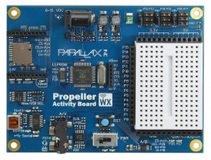
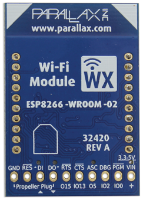

Hardware#
This page introduces some essential hardware components that you will encounter when using the Parallax Propellor Activity Board WX in IoT applications. It includes an overview of some sensors and actuators, as well as quick introduction to the board and getting started.
Here is the official Parallax guide for reference.
Parallax Propellor Board#
The Parallax Propeller Activity Board WX is an affordable and fully-featured development board designed for Propeller projects. It comes equipped with a mini solderless breadboard, expanded I/O headers, and both 3.3V and 5V power regulators, allowing users to easily build Kickstart demonstration projects or Propeller C tutorials.

Key Features:
Integrated Solderless Breadboard: The board includes a mini solderless breadboard, facilitating projects with short jumper wires like the 100mm Male-Male Jumper Wires.
Power Options:
USB Cable: Power can be supplied via a USB cable during programming and testing. Note that USB ports typically provide up to 500 mA of current.
Separate Power Supply: Alternatively, a 6-9 volt battery pack or a power adapter delivering at least 1 amp at 6 to 9 volts can be used when untethered from a computer.
3-Position Power Switch: The board features a 3-position switch to control power distribution:
Position 0: Removes power from all power pin connections.
Position 1: Applies power to the breadboard power pins, excluding the six servo headers.
Position 2: Applies power to both the breadboard pins and the servo headers.
Using Servo Headers: The servo headers facilitate easy testing of Parallax continuous or standard servo motors. Additional information is available in the documentation.
Adapting Wiring Diagrams: Wiring diagrams from Kickstart projects can be adapted for use with the Propeller Activity Board. Depending on the original diagram:
Parallax WX Wi-Fi Module for Prop C#
This Wi-Fi module connects to your Propeller Activity Board, allowing you to open up the possibility of priojects using interactive internet and web features.

Wi-Fi Module Firmware#
Go to the Parallax Wi-Fi Module Firmware and Example Files download page
Download the most recent version (highest version number) 32420-Parallax-ESP…zip
Unzip to a folder and make sure the words Parallax ESP and the version number are in the folder name
Connect Wi-Fi Module to Propeller Board#
Set the board’s power switch to 1
Run an example program